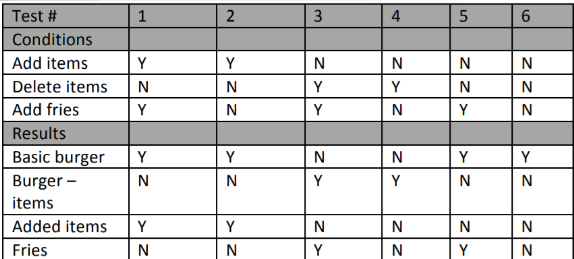
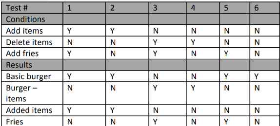

1. When following the fundamental test process, when should the test control activity take place?
1. Khi tuân theo quy trình kiểm thử cơ bản, hoạt động kiểm soát kiểm thử (test control) nên diễn ra khi nào?
2. Which of the following is the activity that compares the planned test progress to the actual test progress?
2. Hoạt động nào dưới đây là hoạt động so sánh tiến độ kiểm thử đã được lập kế hoạch với tiến độ kiểm thử thực tế?
3. As a tester, which of the following is a key to effectively communicate and maintain positive relationships with developers when there is disagreement over the prioritization of a defect?
3. Với vai trò là tester, lựa chọn nào dưới đây là yếu tố then chốt để giao tiếp hiệu quả và duy trì mối quan hệ tích cực với developer khi có bất đồng về mức độ ưu tiên của một defect?
4. Which of the following statements is a valid objective for testing?
4. Phát biểu nào dưới đây là một mục tiêu hợp lệ của hoạt động kiểm thử?
5. Which of the following statements correctly describes the difference between testing and debugging?
5. Phát biểu nào dưới đây mô tả đúng sự khác nhau giữa kiểm thử (testing) và gỡ lỗi (debugging)?
6. Which one of the statements below describes a failure discovered during testing or in production?
6. Phát biểu nào dưới đây mô tả một failure được phát hiện trong quá trình kiểm thử hoặc khi hệ thống đang chạy thực tế (production)?
7. Which one of the following is TRUE?
7. Phát biểu nào dưới đây là ĐÚNG?
8. Which of the following is most correct regarding the test level at which functional tests may be executed?
8. Phát biểu nào dưới đây là chính xác nhất về các mức kiểm thử mà tại đó kiểm thử chức năng (functional testing) có thể được thực hiện?
9. Usability testing is an example of which type of testing?
9. Kiểm thử khả năng sử dụng (Usability testing) là ví dụ của loại kiểm thử nào?
10. You have been receiving daily builds from the developers. Even though they are documenting the fixes they are including in each build, you are finding that the fixes either aren’t in the build or are not working. What type of testing is best suited for finding these issues?
10. Bạn đang nhận các bản build hằng ngày từ developer. Mặc dù họ có ghi chú rõ các bản sửa lỗi được đưa vào mỗi build, bạn lại phát hiện rằng các bản sửa lỗi đó hoặc không có trong build, hoặc có nhưng không hoạt động. Loại kiểm thử nào phù hợp nhất để phát hiện các vấn đề này?
11. During which level of testing should non-functional tests be executed?
11. Kiểm thử phi chức năng (non-functional testing) nên được thực hiện ở những mức kiểm thử nào?
12. Which of the following should NOT be a trigger for maintenance testing?
12. Trường hợp nào dưới đây KHÔNG nên được xem là nguyên nhân kích hoạt kiểm thử bảo trì (maintenance testing)?
13. If impact analysis indicates that the overall system could be significantly affected by system maintenance activities, why should regression testing be executed after the changes?
13. Nếu phân tích tác động (impact analysis) cho thấy rằng toàn bộ hệ thống có thể bị ảnh hưởng đáng kể bởi các hoạt động bảo trì hệ thống, thì vì sao cần thực hiện kiểm thử hồi quy (regression testing) sau khi có thay đổi?
14. Which of the following describes the main activities of a formal review?
14. Phát biểu nào dưới đây mô tả đúng các hoạt động chính của một buổi đánh giá chính thức (formal review)?
15. Which of the review types below is the BEST option to choose when the review must follow a formal process based on rules and checklists?
15. Loại review nào dưới đây là lựa chọn TỐT NHẤT khi việc review bắt buộc phải tuân theo một quy trình chính thức dựa trên các quy tắc và checklist?
16. You are participating in a role-based review session. Your assigned role is that of a senior citizen. The product is an online banking application that is targeted for use on smart phones. You are currently reviewing the user interface of the product with a prototype that works on iPhones. Which of the following is an area that you should review?
16. Bạn đang tham gia một buổi review theo vai trò (role-based review). Vai trò được giao cho bạn là người cao tuổi. Sản phẩm là một ứng dụng ngân hàng trực tuyến dành cho điện thoại thông minh. Hiện tại bạn đang review giao diện người dùng (user interface) của sản phẩm thông qua một bản prototype chạy trên iPhone. Trong các lựa chọn sau, đâu là khía cạnh bạn nên review?
17. The design of a newspaper subscriptions system is being
reviewed. The expected system users are:
Subscribers
Technical support team
Billing department
Database administrator
Each type of user logs into the system through a different login
interface (e.g. subscribers login via a web page; technical
support via an application).
Different reviewers were requested to review the system’s login
flow from the perspective of the above user categories.
Which of the following review comments is MOST LIKELY to have
been made by all reviewers?
17. Thiết kế của một hệ thống đăng ký báo đang được xem xét. Các
nhóm người dùng dự kiến của hệ thống gồm:
Người đăng ký (Subscribers)
Nhóm hỗ trợ kỹ thuật
Bộ phận thanh toán
Quản trị cơ sở dữ liệu
Mỗi loại người dùng đăng nhập vào hệ thống thông qua một giao
diện đăng nhập khác nhau
(ví dụ: người đăng ký đăng nhập qua trang web; bộ phận hỗ trợ kỹ
thuật đăng nhập qua ứng dụng).
Các reviewer khác nhau được yêu cầu đánh giá luồng đăng nhập của
hệ thống theo góc nhìn của các nhóm người dùng trên.
Nhận xét review nào dưới đây là KHẢ NĂNG CAO NHẤT đã được TẤT CẢ
các reviewer đưa ra?
18. You are testing a machine that scores exam papers and
assigns grades. Based on the score achieved the grades are as
follows:
1-49 = F, 50-59 = D, 60-69 = D, 70-79 = C, 80-89 = B, 90-100 = A
If you apply equivalence partitioning, how many test cases will
you need to achieve minimum test coverage?
18.Bạn đang kiểm thử một máy chấm điểm bài thi và gán xếp loại.
Dựa trên điểm số đạt được, các mức xếp loại như sau:
1–49 = F, 50–59 = D, 60–69 = D, 70–79 = C, 80–89 = B, 90–100 = A
Nếu áp dụng kỹ thuật phân vùng tương đương (equivalence
partitioning), bạn cần bao nhiêu test case để đạt mức bao phủ
tối thiểu?

19. You have been given the following conditions and results from those condition combinations. Given this information, using the decision table technique, what is the minimum number of test cases you would need to test these conditions?
19. Bạn được cung cấp các điều kiện và các kết quả sinh ra từ các tổ hợp điều kiện đó. Dựa trên thông tin này, khi dùng kỹ thuật Decision Table, số lượng test case tối thiểu cần có để kiểm tra các điều kiện là bao nhiêu?
20. You have been given the following requirement: A user must log in to the system with a valid username and password. If they fail to enter the correct combination three times, they will receive an error and will have to wait 10 minutes before trying again. The test terminates when the user successfully logs in. How many test cases are needed to provide 100% state transition coverage?
20. Bạn được cung cấp yêu cầu sau: Người dùng phải đăng nhập vào hệ thống bằng tên đăng nhập và mật khẩu hợp lệ. Nếu nhập sai 3 lần liên tiếp, người dùng sẽ nhận được thông báo lỗi và phải chờ 10 phút trước khi thử lại. Việc kiểm thử kết thúc khi người dùng đăng nhập thành công. Cần bao nhiêu test case để đạt được 100% bao phủ chuyển trạng thái (state transition coverage)?
21. You are testing a thermostat for a heating/air conditioning
system. You have been given the following requirements:
When the temperature is below 70 degrees, turn on the heating
system
When the temperature is above 75 degrees, turn on the air
conditioning system
When the temperature is between 70 and 75 degrees, inclusive,
turn on fan only
Which of the following is the minimum set of test temperature
values to achieve 100% two-value boundary value analysis
coverage?
21. Bạn đang kiểm thử một bộ điều nhiệt cho hệ thống sưởi / điều hòa không khí. Bạn được cung cấp các yêu cầu sau: Khi nhiệt độ dưới 70 độ, bật hệ thống sưởi Khi nhiệt độ trên 75 độ, bật hệ thống điều hòa Khi nhiệt độ từ 70 đến 75 độ (bao gồm cả 70 và 75), chỉ bật quạt Tập giá trị nhiệt độ kiểm thử nhỏ nhất nào sau đây giúp đạt 100% bao phủ phân tích giá trị biên hai phía (two-value BVA)?

22. You are testing a scale system that determines shipping rates for a regional web-based auto parts distributor. You want to group your test conditions to minimize the testing. Identify how many equivalence classes are necessary for the following range. Weights are rounded to the nearest pound
22. Bạn đang kiểm thử một hệ thống cân dùng để xác định chi phí vận chuyển cho một nhà phân phối phụ tùng ô tô trực tuyến trong khu vực. Bạn muốn nhóm các điều kiện kiểm thử để giảm thiểu số lượng test cần thực hiện. Hãy xác định có bao nhiêu lớp tương đương (equivalence classes) là cần thiết cho dải giá trị sau. Trọng lượng được làm tròn đến pound gần nhất.
23. You are testing a scale system that determines shipping
rates for a regional web-based auto parts distributor. Due to
regulations, shipments cannot exceed 100 lbs. You want to
include boundary value analysis as part of your black-box test
design.
➤ How many tests will you need to execute to achieve 100%
two-value boundary value analysis?
23. Bạn đang kiểm thử một hệ thống cân dùng để xác định mức phí
vận chuyển cho một nhà phân phối phụ tùng ô tô trực tuyến trong
khu vực. Do quy định, các lô hàng không được vượt quá 100 pound
(lbs). Bạn muốn áp dụng kỹ thuật phân tích giá trị biên như một
phần của thiết kế kiểm thử hộp đen.
➤ Bạn cần thực hiện bao nhiêu ca kiểm thử để đạt 100% phân tích
giá trị biên hai giá trị (two-value)?
 



24. Which of the following is the correct decision table for the following pseudocode for ordering a hamburger? Note: if you add or delete items from the basic burger, you no longer get the basic burger.
24. Bảng quyết định nào sau đây là đúng cho đoạn mã giả (pseudocode) dùng để đặt một chiếc hamburger? Lưu ý: nếu bạn thêm hoặc xoá các thành phần khỏi hamburger cơ bản, thì bạn sẽ không còn được coi là đang chọn hamburger cơ bản nữa.
25. Which of the following is the correct decision table for the
following pseudocode for ordering a hamburger?
Note: if you add or delete items from the basic burger, you no
longer get the basic burger.
You are testing an e-commerce transaction that has the following
states and transitions:
Login (invalid) > Login
Login > Search
Search > Search
Search > Shopping Cart
Shopping Cart > Search
Shopping Cart > Checkout
Checkout > Search
Checkout > Logout
For a state transition diagram, how many transitions should be
shown?
25. Bảng quyết định nào sau đây là đúng cho đoạn giả mã dùng để
đặt một chiếc hamburger?
Lưu ý: nếu bạn thêm hoặc xóa thành phần khỏi hamburger cơ bản,
thì bạn sẽ không còn được xem là hamburger cơ bản nữa.
Bạn đang kiểm thử một giao dịch thương mại điện tử với các trạng
thái (state) và chuyển trạng thái (transition) sau:
Đăng nhập (không hợp lệ) > Đăng nhập
Đăng nhập > Tìm kiếm
Tìm kiếm > Tìm kiếm
Tìm kiếm > Giỏ hàng
Giỏ hàng > Tìm kiếm
Giỏ hàng > Thanh toán
Thanh toán > Tìm kiếm
Thanh toán > Đăng xuất
Trong biểu đồ chuyển trạng thái (state transition diagram), cần
thể hiện bao nhiêu transition?
26. You are testing a banking application that allows a customer to withdraw 20, 100 or 500 dollars in a single transaction. The values are chosen from a drop-down list and no other values may be entered. How many equivalence partitions need to be tested to achieve 100% equivalence partition coverage?
26. Bạn đang kiểm thử một ứng dụng ngân hàng cho phép khách hàng rút 20, 100 hoặc 500 đô la trong một giao dịch. Các giá trị được chọn từ danh sách thả xuống (drop-down list) và không thể nhập bất kỳ giá trị nào khác. Cần kiểm thử bao nhiêu lớp tương đương (equivalence partitions) để đạt 100% độ bao phủ phân vùng tương đương (equivalence partition coverage)?
27. What is the minimum number of test cases needed to achieve
100% statement coverage?
if x = 3
Print("Hello")
27. Số lượng test case tối thiểu cần thiết để đạt 100% độ bao
phủ câu lệnh (statement coverage) là bao nhiêu?
if x = 3
Print("Hello")
28. Which of the following are typical exit criteria from testing?
28. Những mục nào sau đây là tiêu chí kết thúc kiểm thử (exit criteria) điển hình?
29. There are several test strategies. Which strategy (1–4) is
characterized by which description (A–D) below?
1. Analytical
2. Methodical
3. Model-based
4. Consultative
a）Tests are based on a state diagram of a required aspect of
the product
b）Tests are designed and prioritized based on the level of risk
c）Systematic use of some predefined set of test conditions
d）Tests are chosen based on the views of business domain
experts
29. Có nhiều chiến lược kiểm thử (test strategy) khác nhau.Chiến
lược nào (1–4) tương ứng với mô tả nào (A–D) dưới đây?
1. Analytical (Phân tích)
2. Methodical (Theo phương pháp)
3. Model-based (Dựa trên mô hình)
4. Consultative (Tham vấn)
a）Kiểm thử dựa trên sơ đồ trạng thái của một khía cạnh cần kiểm
thử của sản phẩm
b）Kiểm thử được thiết kế và ưu tiên dựa trên mức độ rủi ro
c）Sử dụng có hệ thống một tập các điều kiện kiểm thử được xác
định trước
d）Kiểm thử được lựa chọn dựa trên ý kiến của các chuyên gia
nghiệp vụ
30. Which one of the following is the characteristic of a metrics-based approach for test estimation?
30. Đặc điểm nào sau đây là đặc trưng của phương pháp ước lượng kiểm thử dựa trên số liệu (metrics-based approach)?
31. The following diagram shows the logical dependencies between a set of seven requirements, where a dependency is shown by an arrow. For example, “R1 → R3” means that R3 depends on R1. Which one of the following options structures the test execution schedule according to the requirement dependencies?
31. Sơ đồ sau thể hiện các quan hệ phụ thuộc logic giữa 7 yêu cầu, trong đó mũi tên biểu thị sự phụ thuộc. Ví dụ: “R1 → R3” nghĩa là R3 phụ thuộc vào R1. Phương án nào sau đây sắp xếp thứ tự thực thi test đúng theo các quan hệ phụ thuộc của yêu cầu?
32. You are working in a team of testers who are all writing test cases. You have noticed that there is a significant inconsistency with the length and amount of detail in the different test cases. Where should the test case guidelines have been documented?
32. Bạn đang làm việc trong một nhóm tester và tất cả mọi người đều viết test case. Bạn nhận thấy rằng có sự không nhất quán lớn về độ dài và mức độ chi tiết giữa các test case khác nhau. Hướng dẫn viết test case lẽ ra nên được tài liệu hóa ở đâu?
33. Which of the following is an example of a good exit criterion from system testing?
33. Phương án nào sau đây là ví dụ tốt về tiêu chí kết thúc kiểm thử (exit criterion) của system testing?